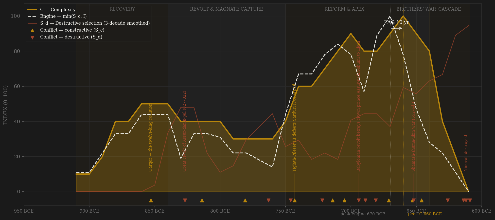
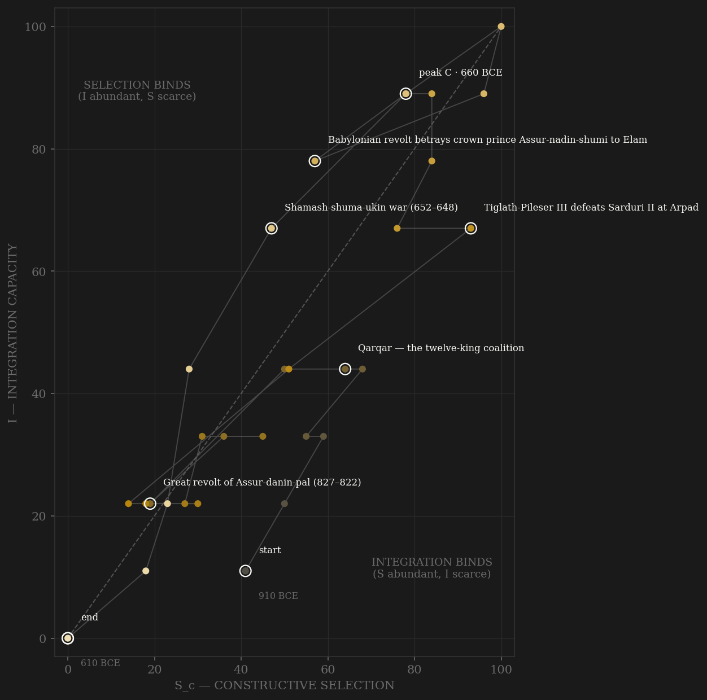

Assyria is the polity where administrative continuity itself is countable: the eponym (limmu) system names one high official per year, in an exact sequence, for 262 unbroken years (910–649 — Millard 1994), and its chronicle appends one event line per year from 858 — 'campaign against X', 'revolt', 'plague', 'the king stayed in the land'. The counted years do the work: six consecutive 'revolt' entries date the great revolt of 827–822; five revolt-years and two plague-years crowd the 760s around the Bur-Sagale eclipse; nine 'stayed in the land' entries in 22 years measure the magnate-era stagnation, when Shamshi-ilu the commander-in-chief outlasted three kings and wrote his own victory stelae without naming any of them — channel-A capture of a ladder that had been DESIGNED non-hereditary, its top offices reserved for eunuchs who could found no lineage. Tiglath-Pileser III's seizure of the throne in 745 is the channel-A showcase of the whole sample: the mega-provinces broken up (the roster roughly doubles), eunuch governors set over the fragments, a standing army officered by king's men — a forcible reopening that the engine registers as the steepest S_c recovery in the series. The Sargonid apparatus then institutionalizes even succession: Esarhaddon's adê oath of 672 bound every governor and vassal to a double succession, and in 669 it EXECUTED — the most complex handover in Assyrian history, bloodless. That is the engine peak: the 660s, oath apparatus working, scholar-market dense, integration at maximum. Complexity answers ten years later — library, Til-Tuba reliefs, Nineveh the largest city on earth — and then the adê's own double structure becomes the fault line: Shamash-shuma-ukin, the treaty-brother, rises in 652, Babylon is starved into cannibalism by 648, Elam is erased at Susa — and with the last rival annihilated the record itself goes dark. Canonical eponyms stop in 649, mid-triumph. Assurbanipal dies in 631; within twenty years Assur is sacked (614), Nineveh burns with its king inside (612), and by 609 the state that had dated three centuries by named officials stops appearing in anyone's records at all.

The trajectory enters at the bottom-left with the Aramaean reconquest and ratchets up both axes through Ashurnasirpal's Kalhu and the Qarqar contest — then the great revolt (-830) and the magnate century drag it down the SELECTION axis while integration merely stalls: the 780s–760s trough is the H-RENT-001 shape, elite capture draining contest from a machine that still runs. Tiglath-Pileser's reopening snaps the path up and to the right in two decades — the steepest recovery vector in the sample — and the Sargonids ride it to the top-right corner: the 660s sit at (100, 100), the only polity in the sample to touch the corner. What follows has no parallel: the path does not decay, it FALLS — 652 turns it straight down, 631 turns it left, and it crosses the entire portrait in five decades from apex to origin, dying against (0,0) in -610. Rome pinned against the S=0 wall for two centuries; Athens died at altitude mid-flight; Assyria is the third topology — a vertical drop from the summit, the phase-portrait signature of an empire whose selection, integration, and complexity were all one apparatus, so when the apparatus tore at the adê seam, every axis went at once.
Coded by locus and target, never by outcome. The Babylonian front is the discipline case: it stays channel-B (frontier war against a rival crown) through 851, 814, 721, 703, and Halule 691 — and flips to S_d exactly three times, each time the imperial core structure itself is struck: 694, when the Babylonian revolt betrays the crown prince Assur-nadin-shumi to Elam (the dual monarchy's dynastic keystone); 689, when Sennacherib razes Babylon — the state destroying its OWN southern capital and compact (the Aurangzeb precedent: manufacturing your own destructive selection); and 652–648, when the brothers' war runs down the empire's spine with both combatants creatures of the same 672 oath. External sackings obey the Adrianople rule: Assur 614 and Nineveh 612 are S_d despite external origin because the coordination machinery itself — the god's city, the archive, the court — was the target and was erased. And the eponym chronicle's six counted 'revolt' years 827–822 code the great revolt as the century's S_d anchor without any historian's adjective intervening: the count is the coding.
| YEAR | CONFLICT | CODE | CODING RATIONALE |
|---|---|---|---|
| 853 BCE | Qarqar — the twelve-king coalition | Sc | Shalmaneser III meets the Levantine coalition (Ahab, Hadadezer) at the Orontes — peak peer contest of the ninth century, external locus throughout |
| 827 BCE | Great revolt of Assur-danin-pal (827–822) | Sd | 27 cities including Nineveh and Assur in rebellion against the succession; the eponym chronicle enters simply 'revolt' six consecutive years — the count is the coding |
| 814 BCE | Babylonian campaigns of Shamshi-Adad V | Sc | Marduk-balassu-iqbi defeated and dragged to Assur — rival crown fought on the frontier; B locus while Babylon is a rival state |
| 781 BCE | Urartu wars of Argishti I (781–774) | Sc | Six campaigns against Urartu counted in eight chronicle years — Assyria on the DEFENSIVE against its structuring peer; hard-cap-worthy external pressure |
| 763 BCE | Revolt in Libbi-ali (Assur) & the eclipse cluster | Sd | Revolt in the religious core city 763–762, then Arrapha, then Guzana; plague twice; the Bur-Sagale eclipse read against the king — five counted revolt-years in one decade |
| 746 BCE | Kalhu revolt topples Ashur-nirari V | Sd | Revolt at the capital ends the old line — internal locus; the door through which Tiglath-Pileser III enters |
| 743 BCE | Tiglath-Pileser III defeats Sarduri II at Arpad | Sc | The reopened machine throws Urartu back across the Euphrates in year three of the reform — external contest won by the rebuilt ladder |
| 722 BCE | Sargon II's usurpation & the Assur revolt | Sd | Throne seized outside rules; the city of Assur revolts over abrogated privileges; Babylon lost to Merodach-baladan as the coup's price — internal locus |
| 714 BCE | Eighth campaign — Musasir sacked, Urartu broken | Sc | The century-long peer rival neutralized in a single campaign; Rusa's reported suicide — external locus, the intelligence files (SAA 1/5) as the contest's paper trail. Ledger row only — its phase-portrait position collides with the peak-C label (Dutch 1672 precedent) |
| 705 BCE | Sargon dies in battle in Tabal — body lost | Sc | A king killed on the frontier in a peer contest is B by locus; the theological shock ('Sin of Sargon') loads on E; the succession held — no internal rupture |
| 694 BCE | Babylonian revolt betrays crown prince Assur-nadin-shumi to Elam | Sd | The locus-rule trigger case: frontier war becomes machinery-attack the moment the dual monarchy's dynastic keystone is seized — never seen again |
| 689 BCE | Sennacherib razes Babylon | Sd | The empire destroys its own southern capital and compact — temples demolished, Marduk's statue carried off; the Aurangzeb precedent: the state manufacturing its own destructive selection |
| 681 BCE | Sennacherib assassinated by his sons | Sd | Regicide in a temple by the passed-over heirs (Parpola 1980), six weeks of succession war — the dynastic core attacking itself. Ledger row only — its phase-portrait position collides with the peak-C label (Dutch 1672 precedent); the 694 betrayal carries the decade's circle |
| 671 BCE | Memphis taken — Egypt entered | Sc | Maximum external reach: Taharqa flees, client kings installed; the 674 repulse honestly counted first by the Babylonian chronicle — external locus throughout |
| 653 BCE | Ulai (Til-Tuba) — Teumman's head | Sc | Elam broken in open battle at the frontier — peer contest; the relief cycle is the contest's monument |
| 652 BCE | Shamash-shuma-ukin war (652–648) | Sd | Brother against brother across the empire's spine — both kings creatures of the 672 adê; Babylon starved into cannibalism by 648: the compact's own double structure becomes the fault line |
| 646 BCE | Susa razed — Elam annihilated | Sc | The rivalry ended by annihilation of the rival — external locus, but victory kills the contest: endogenous channel-B collapse follows (Ili precedent) |
| 626 BCE | Sin-shumu-lishir's usurpation; Nabopolassar takes Babylon | Sd | The eunuch kingmaker seizes the throne — the non-hereditary channel's final perversion; the southern half of the compact secedes under arms |
| 614 BCE | Assur sacked by the Medes | Sd | The religious core — the god's own city, every royal burial — burned; external origin, core-destroying locus (Adrianople rule); the Medo-Babylonian pact sealed on the ruins |
| 612 BCE | Nineveh destroyed | Sd | Three-month siege, the wall breached, Sin-shar-ishkun dies in the burning city; the largest city on earth erased and never again a capital — terminal core penetration |
| 609 BCE | Harran — the last dated act | Sd | The rump under Assur-uballit II fails to retake Harran with Necho II's army; the state stops appearing in anyone's records (BM 21901) — terminal |
| COMPONENT | GRADE | BASIS |
|---|---|---|
| S_c — channel A, elite-entry (0.40) | ○ coded on documented institutions | The ša rēši (eunuch) high-officialdom — a DELIBERATELY non-hereditary elite channel (Grayson 1995; Radner 2011); magnate capture era documented in the magnates' own stones (Shamshi-ilu's Til-Barsip inscriptions naming no king, RIMA 3 A.0.104.2010; Nergal-erish's mega-province, Saba'a/Tell al-Rimah stelae; Bel-Harran-belu-usur's city); the 745 reopening: province-splitting (roster ~doubles — Radner, 'Provinces', in Frahm ed. 2017), eunuch governors, kisir sharruti standing army; Sargonid scholar market (SAA 10, Parpola 1993); Assurbanipal's library recruitment |
| S_c — channel B, peer rivalry (0.30 HARD CAP) | ○ coded + ◐ campaign-year counts | Eponym-chronicle campaign destinations counted per year 858–699 ◐; Urartu contest 853–714 (SAA 1/5 intelligence files); Qarqar 853; Babylon-while-frontier (851, 814–811, 721–710, 703, 691 — locus rule); Elam (Der 720, Halule 691, Ulai 653, Susa 647–646); Egypt (repulse 674, Memphis 671, Thebes 663); Cimmerian/Scythian pressure; terminal Medo-Babylonian war B until the core is penetrated 614 |
| S_c — channel C, within-rules contest (0.30) | ○ coded on documented instruments | Designated succession 911–824; Sammu-ramat regency 810–806 as managed minority; Esarhaddon's adê succession treaties 672 (SAA 2 no. 6 — every governor and vassal swearing the double succession simultaneously); the 669 handover EXECUTING bloodlessly = the instrument's proof; substitute-king ritual; royal-scholar advisory competition with rival cross-checking (SAA 10; queries SAA 4). After 648, C never re-institutionalizes |
| S_d — Destructive | ○ event-dated + ◐ revolt-year counts | Great revolt 827–822 = six counted chronicle 'revolt' years ◐; 763–758 cluster (Assur, Arrapha, Guzana) ◐; Kalhu 746 ◐; Sargon's usurpation 722–721; crown prince betrayed 694; Babylon razed by its own empire 689; assassination of Sennacherib 681 (Parpola 1980); magnate purge 670; Shamash-shuma-ukin war 652–648; terminal cascade 631–609 decade-by-decade (Fall of Nineveh Chronicle, BM 21901) |
| Sc_v1_combat (frozen synthetic) | ○ scholar-coded | Channel B alone (external-war-only — the prior definition's operative content), synthesized per the straight-to-v2 rule (Mughal/Gupta/Athens precedent); no v1 page ever existed for Assyria |
| I — Integration | ○ coded systems + ◐ eponym continuity & archive density | The eponym rotation itself = countable administrative continuity, unbroken 910–649 ◐ (Millard 1994); royal road + kalliu relay post system — the world's first state long-distance communication network (Radner 2014); tribute standardization post-745; Aramaic-Akkadian administrative bilingualism as integration technology (Radner 2015); the 672 adê as synchronized empire-wide oath; SAA letter density bimodal (Sargon cluster; Esarhaddon/Assurbanipal cluster) with post-646 archival darkness coded as decay ◐ |
| C — Complexity | ○ coded on dated works + counted artifacts | Capital arcs: Kalhu 879 (banquet stele 69,574 guests — Wiseman, Iraq 14), Dur-Sharrukin 717–706 (abandoned on Sargon's death — sunk capital), Nineveh (~12,000 acres, Southwest Palace); Khinis canals ~95 km + Jerwan aqueduct — the first monumental stone aqueduct (Jacobsen & Lloyd 1935; Dalley 2013); provincialization count (Radner 2017); deportation-resettlement logistics as state capacity (Oded 1979: ~4.5M claimed, ~85% post-745 — order-of-magnitude only); Assurbanipal's library ~31,000 tablets/fragments; North Palace reliefs ~645 |
| E — Entropy | ◐ counted plague/revolt years + ○ shocks + ◐ paleoclimate | Chronicle plague years 802, 765, 759 ◐; revolt-year counts ◐; the 705 shock (Sargon's body lost — 'Sin of Sargon', SAAB 3 1989); Halule casualties 691; siege famine 650–648 ('they ate the flesh of their sons and daughters' — annals; SAA 18 letters); Kuna Ba speleothem megadrought c. 675–550, driest c. 660–600 (Sinha et al. 2019, Sci Adv 5:eaax6656) ◐; terminal burn layers and settlement-survey collapse (Radner 2015) |
| R — Renewal (population) | ○ order-of-magnitude | Imperial population under direct rule in raw MILLIONS: ~1M heartland (10th c.) → ~7M peak under Esarhaddon/early Assurbanipal incl. Babylonia (Egypt held too briefly to count). No census survives; ±50%; carries NO analytic weight. Deportee resettlement flows (Oded 1979) noted as the mechanism |
31 decade rows (-910..-610; decade -D covers years D..D-9 BCE, so Qarqar 853 sits in -860, the assassination 681 AND Babylon razed 689 in -690, Nineveh 612 in -620, Harran 609 in -610) built by scripts/build_assyria_sicre.py — a straight-to-v2 contestability build (AMENDMENT_S_definition_v2.md): Sc_constructive = 0.40 elite-entry (ša rēši eunuch officialdom, magnate capture, the 745 reopening, scholar market) + 0.30 peer-polity rivalry (hard cap; eponym-chronicle campaign-years counted ◐; Babylonian front locus-ruled) + 0.30 within-rules contest (adê succession apparatus, scholar cross-checking); Sc_v1_combat = channel B alone, synthesized per the straight-to-v2 rule (no v1 page ever existed). The eponym (limmu) backbone gives counted administrative continuity 910–649 and counted event-years 858–699 (parsed TSV in data/raw/assyria/pulls/); canonical eponyms END 649 and post-canonical order is disputed (Millard 1994) — the countability degradation is coded as terminal decay, not padded. Channel ledger: data/raw/assyria/coding_ledger_v2.csv; audit: components_audit.csv; full provenance: data/raw/assyria/SOURCES.md. FROZEN-PROTOCOL LAG UNDER BOTH DEFINITIONS (3-decade centered rolling mean, engine=min(Sc,I)): v2 engine -670 (the adê-works decade: succession executes bloodlessly 669, scholar market and integration at maximum) → C -660 (library, Til-Tuba, Nineveh world-city) = +10 SIMULTANEOUS; v1 engine -710 (Sargon's last wars/Nineveh project) → C -660 = +50 PASS — the definitions DISAGREE and the disagreement is shown, not hidden. UNSMOOTHED sensitivity: identical under both definitions (+10 SIM / +50 PASS) — the verdict is not a smoothing artifact. Margins: smoothed C at -660 (93.3) clears both neighbors (90.0); v2 engine at -670 (89.0) clears -680 (82.0). The engine peak is NOT a crisis row (S_d at -670 is 33 vs series max 100), so the SIMULTANEOUS verdict is not contamination — it is the finding: Assyria collapses FROM apparent peak, with the sharpest peak-to-collapse in the ancient world (~30 years from Assurbanipal's apex to the loss of Babylonia, ~50 to annihilation). The ○ halo-effect caveat applies (scholar-coded polities cluster at SIMULTANEOUS — carried on every ○ page), softened here by the ◐ counted backbones: the great revolt, the 760s crisis, the magnate stagnation, and the campaign tempo enter the coding as counts, not adjectives. Assurbanipal's death: 631 followed (Frahm 2017; 627 variant does not move any decade cell). Rebuild: build_assyria_sicre.py, then polity_report.py --slug assyria